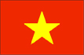

{kind=link}


![[Country map of Vietnam]](../maps/vm-map.jpg)
| Vietnam |  |
|
| | |
| Introduction |
Background: France occupied all of Vietnam by 1884. Independence was declared after World War II, but the French continued to rule until 1954 when they were defeated by communist forces under HO Chi Minh, who took control of the north. US economic and military aid to South Vietnam grew through the 1960s in an attempt to bolster the government, but US armed forces were withdrawn following a cease-fire agreement in 1973. Two years later North Vietnamese forces overran the south. Economic reconstruction of the reunited country has proven difficult as aging Communist Party leaders have only grudgingly initiated reforms necessary for a free market.
| Geography |
Location: Southeastern Asia, bordering the Gulf of Thailand, Gulf of Tonkin, and South China Sea, alongside China, Laos, and Cambodia
Geographic coordinates: 16 00 N, 106 00 E
Map references: Southeast Asia
Area:
total:
329,560 sq km
land:
325,360 sq km
water:
4,200 sq km
Area - comparative: slightly larger than New Mexico
Land boundaries:
total:
4,639 km
border countries:
Cambodia 1,228 km, China 1,281 km, Laos 2,130 km
Coastline: 3,444 km (excludes islands)
Maritime claims:
contiguous zone:
24 nm
continental shelf:
200 nm or to the edge of the continental margin
exclusive economic zone:
200 nm
territorial sea:
12 nm
Climate: tropical in south; monsoonal in north with hot, rainy season (mid-May to mid-September) and warm, dry season (mid-October to mid-March)
Terrain: low, flat delta in south and north; central highlands; hilly, mountainous in far north and northwest
Elevation extremes:
lowest point:
South China Sea 0 m
highest point:
Ngoc Linh 3,143 m
Natural resources: phosphates, coal, manganese, bauxite, chromate, offshore oil and gas deposits, forests, hydropower
Land use:
arable land:
17%
permanent crops:
4%
permanent pastures:
1%
forests and woodland:
30%
other:
48% (1993 est.)
Irrigated land: 18,600 sq km (1993 est.)
Natural hazards: occasional typhoons (May to January) with extensive flooding
Environment - current issues: logging and slash-and-burn agricultural practices contribute to deforestation and soil degradation; water pollution and overfishing threaten marine life populations; groundwater contamination limits potable water supply; growing urban industrialization and population migration are rapidly degrading environment in Hanoi and Ho Chi Minh City
Environment - international agreements:
party to:
Biodiversity, Climate Change, Desertification, Endangered Species, Environmental Modification, Hazardous Wastes, Law of the Sea, Ozone Layer Protection, Ship Pollution, Wetlands
signed, but not ratified:
Climate Change-Kyoto Protocol, Nuclear Test Ban
| People |
Population: 78,773,873 (July 2000 est.)
Age structure:
0-14 years:
33% (male 13,353,828; female 12,516,289)
15-64 years:
62% (male 23,691,412; female 24,951,397)
65 years and over:
5% (male 1,696,708; female 2,564,239) (2000 est.)
Population growth rate: 1.49% (2000 est.)
Birth rate: 21.62 births/1,000 population (2000 est.)
Death rate: 6.26 deaths/1,000 population (2000 est.)
Net migration rate: -0.51 migrant(s)/1,000 population (2000 est.)
Sex ratio:
at birth:
1.06 male(s)/female
under 15 years:
1.07 male(s)/female
15-64 years:
0.95 male(s)/female
65 years and over:
0.66 male(s)/female
total population:
0.97 male(s)/female (2000 est.)
Infant mortality rate: 31.13 deaths/1,000 live births (2000 est.)
Life expectancy at birth:
total population:
69.27 years
male:
66.84 years
female:
71.87 years (2000 est.)
Total fertility rate: 2.53 children born/woman (2000 est.)
Nationality:
noun:
Vietnamese (singular and plural)
adjective:
Vietnamese
Ethnic groups: Vietnamese 85%-90%, Chinese 3%, Muong, Tai, Meo, Khmer, Man, Cham
Religions: Buddhist, Taoist, Roman Catholic, indigenous beliefs, Muslim, Protestant, Cao Dai, Hoa Hao
Languages: Vietnamese (official), Chinese, English, French, Khmer, tribal languages (Mon-Khmer and Malayo-Polynesian)
Literacy:
definition:
age 15 and over can read and write
total population:
93.7%
male:
96.5%
female:
91.2% (1995 est.)
| Government |
Country name:
conventional long form:
Socialist Republic of Vietnam
conventional short form:
Vietnam
local long form:
Cong Hoa Chu Nghia Viet Nam
local short form:
Viet Nam
abbreviation:
SRV
Data code: VM
Government type: Communist state
Capital: Hanoi
Administrative divisions: 58 provinces (tinh, singular and plural), 3 municipalities* (thu do, singular and plural); An Giang, Bac Giang, Bac Kan, Bac Lieu, Bac Ninh, Ba Ria-Vung Tau, Ben Tre, Binh Dinh, Binh Duong, Binh Phuoc, Binh Thuan, Ca Mau, Can Tho, Cao Bang, Dac Lac, Da Nang, Dong Nai, Dong Thap, Gia Lai, Ha Giang, Hai Duong, Hai Phong*, Ha Nam, Ha Noi*, Ha Tay, Ha Tinh, Hoa Binh, Ho Chi Minh*, Hung Yen, Khanh Hoa, Kien Giang, Kon Tum, Lai Chau, Lam Dong, Lang Son, Lao Cai, Long An, Nam Dinh, Nghe An, Ninh Binh, Ninh Thuan, Phu Tho, Phu Yen, Quang Binh, Quang Nam, Quang Ngai, Quang Ninh, Quang Tri, Soc Trang, Son La, Tay Ninh, Thai Binh, Thai Nguyen, Thanh Hoa, Thua Thien-Hue, Tien Giang, Tra Vinh, Tuyen Quang, Vinh Long, Vinh Phuc, Yen Bai
Independence: 2 September 1945 (from France)
National holiday: Independence Day, 2 September (1945)
Constitution: 15 April 1992
Legal system: based on communist legal theory and French civil law system
Suffrage: 18 years of age; universal
Executive branch:
chief of state:
President Tran Duc LUONG (since 24 September 1997) and Vice President Nguyen Thi BINH (since NA October 1992)
head of government:
Prime Minister Phan Van KHAI (since 25 September 1997); First Deputy Prime Minister Nguyen Tan DUNG (since 29 September 1997); Deputy Prime Ministers Nguyen Cong TAN (since 29 September 1997), Nguyen Manh CAM (since 29 September 1997), and Pham Gia KHIEM (since 29 September 1997)
cabinet:
Cabinet appointed by the president on the proposal of the prime minister and ratification of the National Assembly
elections:
president elected by the National Assembly from among its members for a five-year term; election last held 25 September 1997 (next to be held when National Assembly meets following legislative elections in NA 2002); prime minister appointed by the president from among the members of the National Assembly; deputy prime ministers appointed by the prime minister
election results:
Tran Duc LUONG elected president; percent of National Assembly vote - NA
Legislative branch:
unicameral National Assembly or Quoc-Hoi (450 seats; members elected by popular vote to serve five-year terms)
elections:
last held 20 July 1997 (next to be held NA 2002)
election results:
percent of vote by party - CPV 92%, other 8% (the 8% are not CPV members but are approved by the CPV to stand for election); seats by party - CPV or CPV-approved 450
Judicial branch: Supreme People's Court, chief justice is elected for a five-year term by the National Assembly on the recommendation of the president
Political parties and leaders: only party - Communist Party of Vietnam or CPV [Le Kha PHIEU, general secretary]
International organization participation: ACCT, APEC, AsDB, ASEAN, CCC, ESCAP, FAO, G-77, IAEA, IBRD, ICAO, ICRM, IDA, IFAD, IFC, IFRCS, ILO, IMF, IMO, Inmarsat, Intelsat, Interpol, IOC, IOM (observer), ISO, ITU, NAM, OPCW, UN, UNCTAD, UNESCO, UNIDO, UPU, WCL, WFTU, WHO, WIPO, WMO, WToO, WTrO (applicant)
Diplomatic representation in the US:
chief of mission:
Ambassador LE VAN BANG
chancery:
1233 20th Street NW, Washington, DC 20036, Suite 400
telephone:
[1] (202) 861-0737
FAX:
[1] (202) 861-0917
consulate(s) general:
San Francisco
Diplomatic representation from the US:
chief of mission:
Ambassador Douglas B. "Pete" PETERSON
embassy:
7 Lang Ha Road, Ba Dinh District, Hanoi
mailing address:
PSC 461, Box 400, FPO AP 96521-0002
telephone:
[84] (4) 8431500
FAX:
[84] (4) 8350484
consulate(s) general:
Ho Chi Minh City
Flag description: red with a large yellow five-pointed star in the center
| Economy |
Economy - overview: Vietnam is a poor, densely populated country that has had to recover from the ravages of war, the loss of financial support from the old Soviet Bloc, and the rigidities of a centrally planned economy. Substantial progress was achieved from 1986 to 1996 in moving forward from an extremely low starting point - growth averaged around 9% per year from 1993 to 1997. The 1997 Asian financial crisis highlighted the problems existing in the Vietnamese economy but, rather than prompting reform, reaffirmed the government's belief that shifting to a market oriented economy leads to disaster. GDP growth of 8.5% in 1997 fell to 4% in 1998 and rose slightly to an estimated 4.8% in 1999. These numbers masked some major difficulties that are emerging in economic performance. Many domestic industries, including coal, cement, steel, and paper, have reported large stockpiles of inventory and tough competition from more efficient foreign producers. Foreign direct investment has fallen dramatically, from $8.3 billion in 1996 to about $1.6 billion in 1999. Meanwhile, Vietnamese authorities have slowed implementation of the structural reforms needed to revitalize the economy and produce more competitive, export-driven industries. Privatization of state enterprises remains bogged down in political controversy, while the country's dynamic private sector is denied both financing and access to markets. Reform of the banking sector - considered one of the riskiest in the world - is proceeding slowly, raising concerns that the country will be unable to tap sufficient domestic savings to finance growth. Administrative and legal barriers are also causing costly delays for foreign investors and are raising similar doubts about Vietnam's ability to attract additional foreign capital.
GDP: purchasing power parity - $143.1 billion (1999 est.)
GDP - real growth rate: 4.8% (1999 est.)
GDP - per capita: purchasing power parity - $1,850 (1999 est.)
GDP - composition by sector:
agriculture:
26%
industry:
33%
services:
41% (1998 est.)
Population below poverty line: 37% (1998 est.)
Household income or consumption by percentage share:
lowest 10%:
3.5%
highest 10%:
29% (1993)
Inflation rate (consumer prices): 4% (1999 est.)
Labor force: 38.2 million (1998 est.)
Labor force - by occupation: agriculture 67%, industry and services 33% (1997 est.)
Unemployment rate: 25% (1995 est.)
Budget:
revenues:
$5.6 billion
expenditures:
$6 billion, including capital expenditures of $1.7 billion (1996 est.)
Industries: food processing, garments, shoes, machine building, mining, cement, chemical fertilizer, glass, tires, oil, coal, steel, paper
Industrial production growth rate: 10.3% (1999 est.)
Electricity - production: 20.62 billion kWh (1998)
Electricity - production by source:
fossil fuel:
12.95%
hydro:
87.05%
nuclear:
0%
other:
0% (1998)
Electricity - consumption: 19.177 billion kWh (1998)
Electricity - exports: 0 kWh (1998)
Electricity - imports: 0 kWh (1998)
Agriculture - products: paddy rice, corn, potatoes, rubber, soybeans, coffee, tea, bananas; poultry, pigs; fish
Exports: $11.5 billion (f.o.b., 1999 est.)
Exports - commodities: crude oil, marine products, rice, coffee, rubber, tea, garments, shoes
Exports - partners: Japan, Germany, Singapore, Taiwan, Hong Kong, France, South Korea, US, China
Imports: $11.6 billion (f.o.b., 1999 est.)
Imports - commodities: machinery and equipment, petroleum products, fertilizer, steel products, raw cotton, grain, cement, motorcycles
Imports - partners: Singapore, South Korea, Japan, France, Hong Kong, Taiwan, Thailand, Sweden
Debt - external: $7.3 billion Western countries; $4.5 billion CEMA debts primarily to Russia; $9 billion to $18 billion nonconvertible debt (former CEMA, Iraq, Iran)
Economic aid - recipient: $2 billion in credits and grants pledged by international donors for 1999 and again for 2000
Currency: 1 new dong (D) = 100 xu
Exchange rates: new dong (D) per US$1 - 14,020 (January 2000), 13,900 (December 1998), 11,100 (December 1996), 11,193 (1995 average), 11,000 (October 1994), 10,800 (November 1993)
Fiscal year: calendar year
| Communications |
Telephones - main lines in use: 775,000 (1995)
Telephones - mobile cellular: 178,000 (1998)
Telephone system:
while Vietnam's telecommunication sector lags far behind other countries in Southeast Asia, Hanoi has made considerable progress since 1991 in upgrading the system; Vietnam has digitalized all provincial switch boards, while fiber-optic and microwave transmission systems have been extended from Hanoi, Da Nang, and Ho Chi Minh City to all provinces; the density of telephone receivers nationwide doubled from 1993 to 1995, but is still far behind other countries in the region
domestic:
NA
international:
satellite earth stations - 2 Intersputnik (Indian Ocean region)
Radio broadcast stations: AM 65, FM 7, shortwave 29 (1999)
Radios: 8.2 million (1997)
Television broadcast stations: at least 7 (plus 13 repeaters) (1998)
Televisions: 3.57 million (1997)
Internet Service Providers (ISPs): 5 (1999)
| Transportation |
Railways:
total:
2,652 km
standard gauge:
166 km 1.435-m gauge
narrow gauge:
2,249 km 1.000-m gauge
dual gauge:
237 km NA-m gauges (three rails) (1998)
Highways:
total:
93,300 km
paved:
23,418 km
unpaved:
69,882 km (1996 est.)
Waterways: 17,702 km navigable; more than 5,149 km navigable at all times by vessels up to 1.8 m draft
Pipelines: petroleum products 150 km
Ports and harbors: Cam Ranh, Da Nang, Haiphong, Ho Chi Minh City, Hong Gai, Qui Nhon, Nha Trang
Merchant marine:
total:
133 ships (1,000 GRT or over) totaling 616,115 GRT/941,611 DWT
ships by type:
bulk 7, cargo 103, chemical tanker 1, combination bulk 1, container 1, liquified gas 1, petroleum tanker 15, refrigerated cargo 4 (1999 est.)
Airports: 48 (1999 est.)
Airports - with paved runways:
total:
36
over 3,047 m:
8
2,438 to 3,047 m:
3
1,524 to 2,437 m:
5
914 to 1,523 m:
13
under 914 m:
7 (1994 est.)
Airports - with unpaved runways:
total:
12
1,524 to 2,437 m:
2
914 to 1,523 m:
5
under 914 m:
5 (1994 est.)
| Military |
Military branches: People's Army of Vietnam (PAVN) (includes Ground Forces, Navy, and Air Force), Coast Guard
Military manpower - military age: 17 years of age
Military manpower - availability:
males age 15-49:
21,149,579 (2000 est.)
Military manpower - fit for military service:
males age 15-49:
13,335,337 (2000 est.)
Military manpower - reaching military age annually:
males:
949,532 (2000 est.)
Military expenditures - dollar figure: $650 million (FY98)
Military expenditures - percent of GDP: 2.5% (FY98)
| Transnational Issues |
Disputes - international: maritime boundary with Cambodia not defined; involved in a complex dispute over the Spratly Islands with China, Malaysia, Philippines, Taiwan, and possibly Brunei; maritime boundary with Thailand resolved, August 1997; maritime boundary dispute with China in the Gulf of Tonkin; Paracel Islands occupied by China but claimed by Vietnam and Taiwan; offshore islands and sections of boundary with Cambodia are in dispute; agreement on land border with China was signed in December 1999, but details of alignment have not been made public
Illicit drugs: minor producer of opium poppy with 2,100 hectares cultivated in 1999, capable of producing 11 metric tons of opium; probably minor transit point for Southeast Asian heroin destined for the US and Europe; growing opium/heroin addiction; possible small-scale heroin production